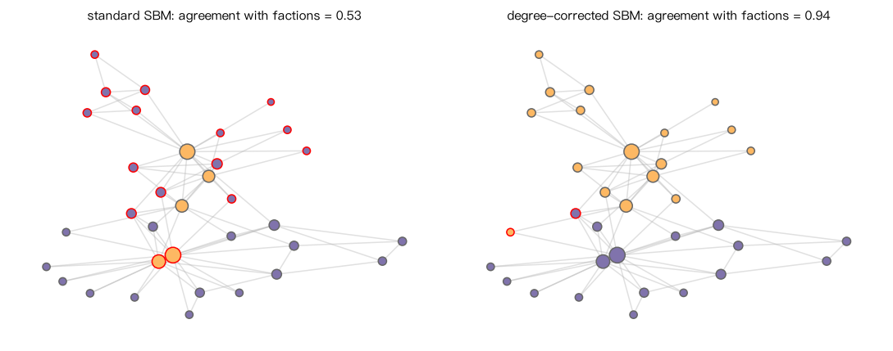

Example08 / 15
标准 SBM 与度修正 SBM（DC-SBM）在空手道网络上的最大似然划分
Karrer 与 Newman（2011）把块模型参数用最大似然估计消去后，得到只依赖划分的目标函数： 标准 SBM： L = Σ_rs m_rs log[ m_rs / (n_r n_s) ] DC-SBM： L = Σ_rs m_rs log[ m_rs / (κ_r κ_s) ] m_rs 为组 r、s 之间的边数（r=s 时计两次），n_r 为组内节点数，κ_r 为组内度之和。 用“随机初始化 + 逐点移动的贪心爬山”在 K=2 下各做 200 次重启，取似然最大的划分，与真实两派比较。 输出：DC-SBM 的最优划分与真实两派基本一致；标准 SBM 的最优划分倾向于把高度节点与低度节点分开。
Output输出图

Output文字输出
标准 SBM: logL = -233.53，与真实两派一致的比例 = 0.53，两组大小 [5, 29]，两组平均度 12.8 / 3.2 DC-SBM: logL = -739.39，与真实两派一致的比例 = 0.94，两组大小 [17, 17]，两组平均度 4.6 / 4.6 真实两派在两种模型下的 logL：SBM -267.65，DC-SBM -743.21
Code代码
# Karrer 与 Newman（2011）把块模型参数用最大似然估计消去后，得到只依赖划分的目标函数：
# 标准 SBM： L = Σ_rs m_rs log[ m_rs / (n_r n_s) ]
# DC-SBM： L = Σ_rs m_rs log[ m_rs / (κ_r κ_s) ]
# m_rs 为组 r、s 之间的边数（r=s 时计两次），n_r 为组内节点数，κ_r 为组内度之和。
# 用“随机初始化 + 逐点移动的贪心爬山”在 K=2 下各做 200 次重启，取似然最大的划分，与真实两派比较。
# 输出：DC-SBM 的最优划分与真实两派基本一致；标准 SBM 的最优划分倾向于把高度节点与低度节点分开。
import networkx as nx
import numpy as np
K = nx.karate_club_graph()
G = nx.Graph(K.edges())
n = G.number_of_nodes()
A = nx.to_numpy_array(G, nodelist=range(n))
deg = A.sum(1)
truth = np.array([0 if K.nodes[i]["club"] == "Mr. Hi" else 1 for i in range(n)])
def xlogy(x, y):
with np.errstate(divide="ignore", invalid="ignore"):
return np.where(x > 0, x * np.log(x / y), 0.0)
def loglik(z, kind, K=2):
Z = np.eye(K)[z]
M = Z.T @ A @ Z # m_rs，对角线为组内边数的 2 倍
size = Z.T @ (deg if kind == "dc" else np.ones(n))
return xlogy(M, np.outer(size, size)).sum()
def fit(kind, restarts=200, K=2, seed=0):
rng = np.random.default_rng(seed)
best_L, best_z = -np.inf, None
for _ in range(restarts):
z = rng.integers(0, K, n)
L = loglik(z, kind, K)
improved = True
while improved:
improved = False
for i in rng.permutation(n):
old = z[i]
for r in range(K):
if r == old:
continue
z[i] = r
L_new = loglik(z, kind, K)
if L_new > L + 1e-10:
L, old, improved = L_new, r, True
z[i] = old
if L > best_L:
best_L, best_z = L, z.copy()
return best_L, best_z
fits = {} # 存下结果用于作图
for kind, name in [("sbm", "标准 SBM"), ("dc", "DC-SBM")]:
L, z = fit(kind)
fits[kind] = z
agree = max((z == truth).mean(), (z != truth).mean())
mean_deg = [deg[z == r].mean() for r in range(2)]
print("%s: logL = %.2f，与真实两派一致的比例 = %.2f，两组大小 %s，两组平均度 %.1f / %.1f"
% (name, L, agree, np.bincount(z).tolist(), *mean_deg))
print("真实两派在两种模型下的 logL：SBM %.2f，DC-SBM %.2f" % (loglik(truth, "sbm"), loglik(truth, "dc")))
# 作图：两种模型的最优划分（颜色 = 推断的组，节点大小 ∝ 度，红框 = 与真实派别不一致）
import matplotlib.pyplot as plt
pos = nx.spring_layout(G, seed=4)
fig, axes = plt.subplots(1, 2, figsize=(10, 4))
for ax, (kind, name) in zip(axes, [("sbm", "standard SBM"), ("dc", "degree-corrected SBM")]):
z = fits[kind]
zz = z if (z == truth).mean() >= 0.5 else 1 - z # 对齐标签
nx.draw_networkx_edges(G, pos, ax=ax, edge_color="0.7", alpha=0.4)
nx.draw_networkx_nodes(G, pos, ax=ax, nodelist=range(n), node_size=20 + 8 * deg,
node_color=["#fdb863" if g == 0 else "#8073ac" for g in zz],
edgecolors=["red" if a != b else "0.4" for a, b in zip(zz, truth)])
ax.set_title("%s: agreement with factions = %.2f" % (name, (zz == truth).mean()), fontsize=10)
ax.axis("off")
plt.tight_layout(); plt.show()Run在浏览器中运行
首次加载 Python 环境约需 20–40 秒；可以修改参数后重新运行。